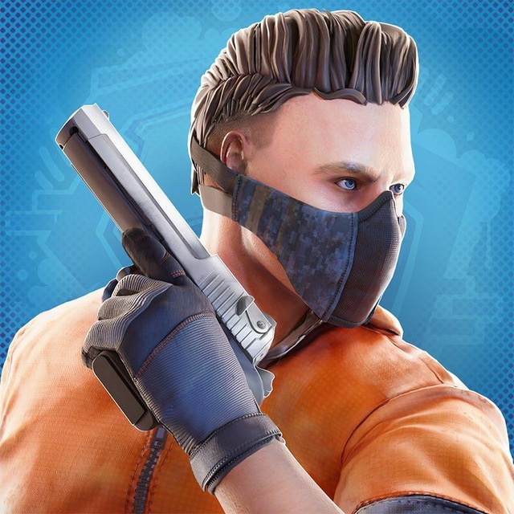
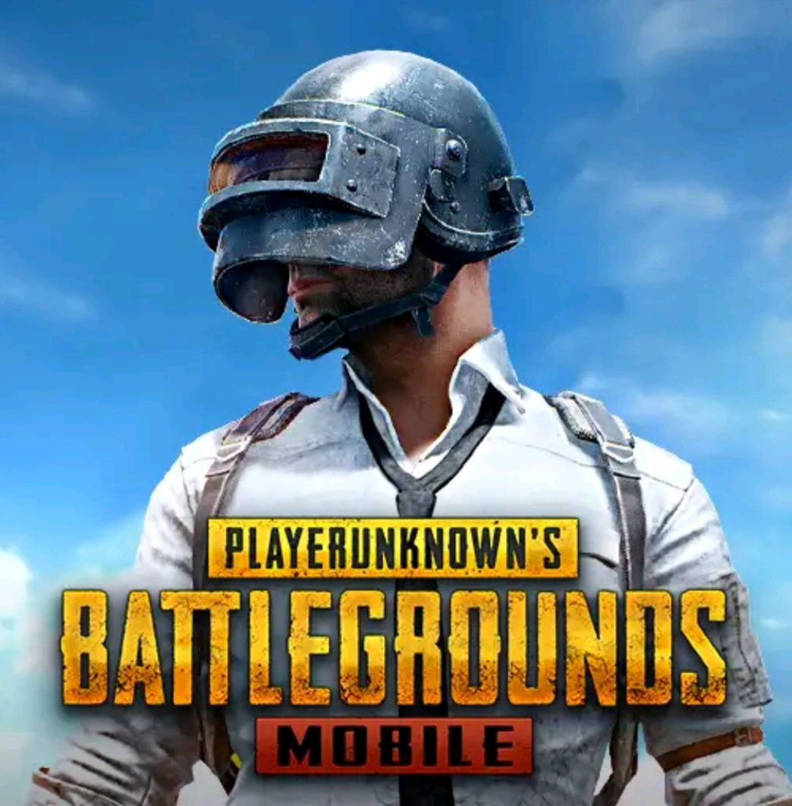
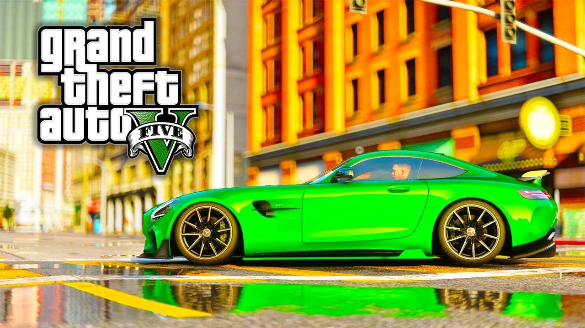

| Oyinlar |
|---|
| 1.Standoff 2 |
| 2.Pubg |
| 3.GTA |
| Standoff 2 | |
|---|---|
| Standoff 2 is a classic first-person shooter with various game modes and an arsenal of modern Russian and foreign weapons. Each weapon has a different set of characteristics that limit the player's tactical options: armor penetration, recoil, rate of fire, price, kill reward, ammo capacity[5]. At the initial stages of the game, various game modes are available, such as planting a bomb, team battle, escalation and others. Once a player reaches level 5, they will unlock Competitive Mode[6] and Allies Mode, which will |  |
| PUBG | |
|---|---|
| PlayerUnknown's Battlegrounds was released on Steam Early Access on March 23, 2017 for the Windows operating system[5]. The game sold over 13 million copies within the first seven months of its release, and peaked at over 2 million players by the end of the year, making it one of the most played games on Steam[6]. On October 31, PUBG sales surpassed 18 million copies. The full game was released on December 21, 2017. The release for Xbox One under the publishing house of Microsoft Studios took place on December 12 under the early access program [7], but already on September 4, 2018, the official release took place. On March 19, 2018, a free-to-play version of PUBG Mobile was released for Android and iOS. A PlayStation 4 version was announced in November 2018, and released on December 7, 2018. |  |
| GTA | |
|---|---|
| The game takes place in the fictional state of San Andreas, inspired by Southern California. The story in the single-player mode revolves around the adventures of three robbers as they pull off increasingly daring heists and take on both organized crime and law enforcement.During the game, the player controls the selected character in first or third person mode; the character can freely move around the vast world of the game both on foot and in cars and other modes of transport. A feature of Grand Theft Auto V compared to other games in the series is the ability to switch between characters at any time, both during the execution of tasks and outside them. Many tasks of the game are connected with robberies and car thefts; at the same time, the game character can participate in skirmishes and chases. |  |